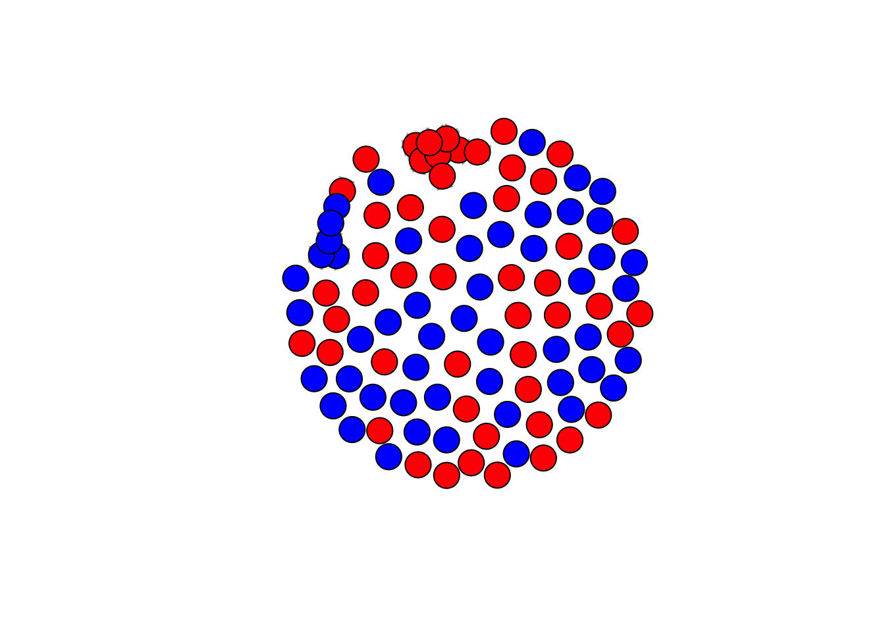
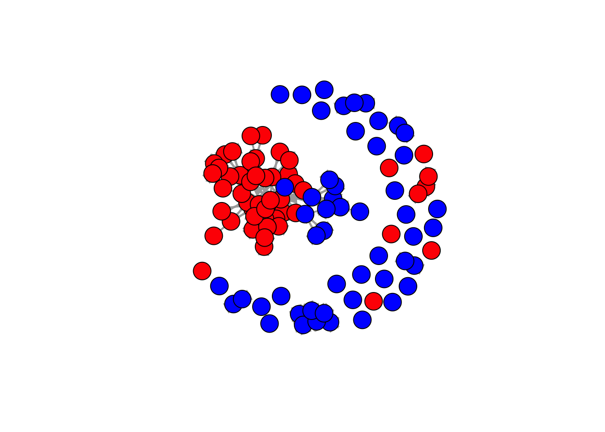

rm(list = ls())
require(tidyverse)## Loading required package: tidyverse## ── Attaching core tidyverse packages ──────────────────────── tidyverse 2.0.0 ──
## ✔ dplyr 1.1.4 ✔ readr 2.1.5
## ✔ forcats 1.0.0 ✔ stringr 1.5.1
## ✔ ggplot2 3.5.1 ✔ tibble 3.2.1
## ✔ lubridate 1.9.3 ✔ tidyr 1.3.1
## ✔ purrr 1.0.2
## ── Conflicts ────────────────────────────────────────── tidyverse_conflicts() ──
## ✖ dplyr::filter() masks stats::filter()
## ✖ dplyr::lag() masks stats::lag()
## ℹ Use the conflicted package (<http://conflicted.r-lib.org/>) to force all conflicts to become errorsrequire(installr)## Loading required package: installr
##
## Welcome to installr version 0.23.4
##
## More information is available on the installr project website:
## https://github.com/talgalili/installr/
##
## Contact: <tal.galili@gmail.com>
## Suggestions and bug-reports can be submitted at: https://github.com/talgalili/installr/issues
##
## To suppress this message use:
## suppressPackageStartupMessages(library(installr))require(foreign)## Loading required package: foreignrequire(jsonlite)## Loading required package: jsonlite
##
## Attaching package: 'jsonlite'
##
## The following object is masked from 'package:purrr':
##
## flattenrequire(openalexR)## Loading required package: openalexR
## Thank you for using openalexR!
## To acknowledge our work, please cite the package by calling `citation("openalexR")`.
## To suppress this message, add `openalexR.message = suppressed` to your .Renviron file.require(scholar)## Loading required package: scholarrequire(rvest)## Loading required package: rvest
##
## Attaching package: 'rvest'
##
## The following object is masked from 'package:readr':
##
## guess_encodingrequire(igraph)## Loading required package: igraph
##
## Attaching package: 'igraph'
##
## The following objects are masked from 'package:lubridate':
##
## %--%, union
##
## The following objects are masked from 'package:dplyr':
##
## as_data_frame, groups, union
##
## The following objects are masked from 'package:purrr':
##
## compose, simplify
##
## The following object is masked from 'package:tidyr':
##
## crossing
##
## The following object is masked from 'package:tibble':
##
## as_data_frame
##
## The following objects are masked from 'package:stats':
##
## decompose, spectrum
##
## The following object is masked from 'package:base':
##
## unionrequire(tidyr)
load("/Users/jannevanheesch/Documents/R. SN/scholars_20240924.rda")
scholars <- x
rm(x)fcolnet <- function(data = scholars, university = "RU", discipline = "sociology", waves = list(c(2015,
2018), c(2019, 2023)), type = c("first")) {
# step 1
demographics <- do.call(rbind.data.frame, data$demographics)
demographics <- demographics %>%
mutate(Universiteit1.22 = replace(Universiteit1.22, is.na(Universiteit1.22), ""), Universiteit2.22 = replace(Universiteit2.22,
is.na(Universiteit2.22), ""), Universiteit1.24 = replace(Universiteit1.24, is.na(Universiteit1.24),
""), Universiteit2.24 = replace(Universiteit2.24, is.na(Universiteit2.24), ""), discipline.22 = replace(discipline.22,
is.na(discipline.22), ""), discipline.24 = replace(discipline.24, is.na(discipline.24), ""))
sample <- which((demographics$Universiteit1.22 %in% university | demographics$Universiteit2.22 %in%
university | demographics$Universiteit1.24 %in% university | demographics$Universiteit2.24 %in%
university) & (demographics$discipline.22 %in% discipline | demographics$discipline.24 %in% discipline))
demographics_soc <- demographics[sample, ]
scholars_sel <- lapply(scholars, "[", sample)
# step 2
ids <- demographics_soc$au_id
nwaves <- length(waves)
nets <- array(0, dim = c(nwaves, length(ids), length(ids)), dimnames = list(wave = 1:nwaves, ids,
ids))
dimnames(nets)
# step 3
df_works <- tibble(works_id = unlist(lapply(scholars_sel$work, function(l) l$id)), works_author = unlist(lapply(scholars_sel$work,
function(l) l$author), recursive = FALSE), works_year = unlist(lapply(scholars_sel$work, function(l) l$publication_year),
recursive = FALSE))
df_works <- df_works[!duplicated(df_works), ]
# step 4
if (type == "first") {
for (j in 1:nwaves) {
df_works_w <- df_works[df_works$works_year >= waves[[j]][1] & df_works$works_year <= waves[[j]][2],
]
for (i in 1:nrow(df_works_w)) {
ego <- df_works_w$works_author[i][[1]]$au_id[1]
alters <- df_works_w$works_author[i][[1]]$au_id[-1]
if (sum(ids %in% ego) > 0 & sum(ids %in% alters) > 0) {
nets[j, which(ids %in% ego), which(ids %in% alters)] <- 1
}
}
}
}
if (type == "last") {
for (j in 1:nwaves) {
df_works_w <- df_works[df_works$works_year >= waves[[j]][1] & df_works$works_year <= waves[[j]][2],
]
for (i in 1:nrow(df_works_w)) {
ego <- rev(df_works_w$works_author[i][[1]]$au_id)[1]
alters <- rev(df_works_w$works_author[i][[1]]$au_id)[-1]
if (sum(ids %in% ego) > 0 & sum(ids %in% alters) > 0) {
nets[j, which(ids %in% ego), which(ids %in% alters)] <- 1
}
}
}
}
if (type == "all") {
for (j in 1:nwaves) {
df_works_w <- df_works[df_works$works_year >= waves[[j]][1] & df_works$works_year <= waves[[j]][2],
]
for (i in 1:nrow(df_works_w)) {
egos <- df_works_w$works_author[i][[1]]$au_id
if (sum(ids %in% egos) > 0) {
nets[j, which(ids %in% egos), which(ids %in% egos)] <- 1
}
}
}
}
output <- list()
output$data <- scholars_sel
output$nets <- nets
return(output)
}Make a data-frame for all political science and sociology works in two waves. 2004-2009, and 2019-2024.
df_RU <- fcolnet(data = scholars, university = "RU", discipline = c("sociology", "political science"), waves = list(c(2004,
2009), c(2019, 2024)), type = c("first"))df <- df_RU$data
df_ego <- do.call(rbind.data.frame, df$demographics)
df$works[[57]]## # A tibble: 2 × 37
## id title display_name author publication_date so so_id host_organization
## <chr> <chr> <chr> <list> <chr> <lgl> <lgl> <lgl>
## 1 http… Euro… European ex… <df> 2004-01-01 NA NA NA
## 2 http… The … The State b… <df> 2005-01-01 NA NA NA
## # ℹ 29 more variables: issn_l <lgl>, url <chr>, pdf_url <lgl>, license <lgl>,
## # version <lgl>, first_page <lgl>, last_page <lgl>, volume <lgl>,
## # issue <lgl>, is_oa <lgl>, is_oa_anywhere <lgl>, oa_status <chr>,
## # oa_url <lgl>, any_repository_has_fulltext <lgl>, language <chr>,
## # grants <lgl>, cited_by_count <int>, counts_by_year <lgl>,
## # publication_year <int>, cited_by_api_url <chr>, ids <list>, doi <lgl>,
## # type <chr>, referenced_works <list>, related_works <list>, …df$works[[58]]## # A tibble: 13 × 38
## id title display_name author ab publication_date so so_id
## <chr> <chr> <chr> <list> <chr> <chr> <chr> <chr>
## 1 https://openale… The … The German … <df> This… 2019-01-01 Marx… http…
## 2 https://openale… The … The “Forgot… <df> This… 2019-01-01 Marx… http…
## 3 https://openale… Work… Workers’ Co… <df> Over… 2021-01-01 Poli… http…
## 4 https://openale… Bram… Bram Mellin… <df> <NA> 2023-03-23 BMGN… http…
## 5 https://openale… Book… Book Review… <df> Besp… 2016-01-01 <NA> <NA>
## 6 https://openale… Chan… Changing Co… <df> <NA> 2016-01-01 <NA> <NA>
## 7 https://openale… Comm… Communist o… <df> <NA> 2015-01-01 Den … http…
## 8 https://openale… The … The concept… <df> <NA> 2017-01-01 <NA> <NA>
## 9 https://openale… Hist… History of … <df> <NA> 2017-01-01 <NA> <NA>
## 10 https://openale… Work… Working Cla… <df> <NA> 2018-01-01 <NA> <NA>
## 11 https://openale… Work… Working-Cla… <df> This… 2019-01-01 Marx… http…
## 12 https://openale… Rece… Recensie: R… <df> Besp… 2019-01-01 De M… http…
## 13 https://openale… Thre… Three Conce… <df> <NA> 2021-01-01 Poli… http…
## # ℹ 30 more variables: host_organization <chr>, issn_l <chr>, url <chr>,
## # pdf_url <chr>, license <chr>, version <chr>, first_page <chr>,
## # last_page <chr>, volume <chr>, issue <chr>, is_oa <lgl>,
## # is_oa_anywhere <lgl>, oa_status <chr>, oa_url <chr>,
## # any_repository_has_fulltext <lgl>, language <chr>, grants <lgl>,
## # cited_by_count <int>, counts_by_year <list>, publication_year <int>,
## # cited_by_api_url <chr>, ids <list>, doi <chr>, type <chr>, …df$works[[57]] <- df$works[[57]] %>% mutate(ab = NA) %>% select(id,title, display_name, author, ab, everything())
df$works[[52]] <- df$works[[52]] %>% mutate(issn_l = NA) %>% select(id,title, display_name, author, publication_date, so, so_id, host_organization, issn_l, everything())
df_works <- do.call(rbind.data.frame, df$works)df_unnest <- df_works %>% unnest(topics, names_sep = "topic.")
head(df_unnest)## # A tibble: 6 × 42
## id title display_name author ab publication_date so so_id
## <chr> <chr> <chr> <list> <chr> <chr> <chr> <chr>
## 1 https://openalex… The … The dangers… <df> <NA> 2024-01-17 Natu… http…
## 2 https://openalex… The … The dangers… <df> <NA> 2024-01-17 Natu… http…
## 3 https://openalex… The … The dangers… <df> <NA> 2024-01-17 Natu… http…
## 4 https://openalex… The … The dangers… <df> <NA> 2024-01-17 Natu… http…
## 5 https://openalex… Text… Text mining… <df> The … 2022-11-01 Soci… http…
## 6 https://openalex… Text… Text mining… <df> The … 2022-11-01 Soci… http…
## # ℹ 34 more variables: host_organization <chr>, issn_l <chr>, url <chr>,
## # pdf_url <chr>, license <chr>, version <chr>, first_page <chr>,
## # last_page <chr>, volume <chr>, issue <chr>, is_oa <lgl>,
## # is_oa_anywhere <lgl>, oa_status <chr>, oa_url <chr>,
## # any_repository_has_fulltext <lgl>, language <chr>, grants <list>,
## # cited_by_count <int>, counts_by_year <list>, publication_year <int>,
## # cited_by_api_url <chr>, ids <list>, doi <chr>, type <chr>, …df_unnest <- df_unnest %>% group_by(title) %>% filter(topicstopic.name == "subfield")
head(df_unnest) #so, some papers have more subfields than others## # A tibble: 6 × 42
## # Groups: title [3]
## id title display_name author ab publication_date so so_id
## <chr> <chr> <chr> <list> <chr> <chr> <chr> <chr>
## 1 https://openalex… The … The dangers… <df> <NA> 2024-01-17 Natu… http…
## 2 https://openalex… Text… Text mining… <df> The … 2022-11-01 Soci… http…
## 3 https://openalex… Text… Text mining… <df> The … 2022-11-01 Soci… http…
## 4 https://openalex… Text… Text mining… <df> The … 2022-11-01 Soci… http…
## 5 https://openalex… Sign… Signals of … <df> Mech… 2024-01-22 Phil… http…
## 6 https://openalex… Sign… Signals of … <df> Mech… 2024-01-22 Phil… http…
## # ℹ 34 more variables: host_organization <chr>, issn_l <chr>, url <chr>,
## # pdf_url <chr>, license <chr>, version <chr>, first_page <chr>,
## # last_page <chr>, volume <chr>, issue <chr>, is_oa <lgl>,
## # is_oa_anywhere <lgl>, oa_status <chr>, oa_url <chr>,
## # any_repository_has_fulltext <lgl>, language <chr>, grants <list>,
## # cited_by_count <int>, counts_by_year <list>, publication_year <int>,
## # cited_by_api_url <chr>, ids <list>, doi <chr>, type <chr>, …test <- fcolnet(data = scholars,
university = "RU",
discipline = c("sociology", "political science"),
waves = list(c(2004, 2009), c(2019, 2024)),
type = c("all"))
test_w1 <- igraph::graph_from_adjacency_matrix(
test$nets[1,,], #now, I take the first wave
mode = c("directed"),
weighted = NULL,
diag = FALSE,
add.colnames = NULL
)
test_w2 <- igraph::graph_from_adjacency_matrix(
test$nets[2,,], #now, I take the second wave
mode = c("directed"),
weighted = NULL,
diag = FALSE,
add.colnames = NULL
)
#DO NOT MESS UP THE ORDER! THUS IF YOU JOIN THIS DATA WITH YOUR OWN DATA CHECK THAT ORDER REMAINED THE SAME!!
plot(test_w1,
vertex.color = ifelse(df_ego$discipline.24 == "sociology", "red", "blue"), #now, I can use actor attributes for plotting.
vertex.label = NA,
edge.width = 1,
edge.arrow.size =1)
plot(test_w2,
vertex.color = ifelse(df_ego$discipline.24 == "sociology", "red", "blue"), #now, I can use actor attributes for plotting.
vertex.label = NA,
edge.width = 1,
edge.arrow.size =1)